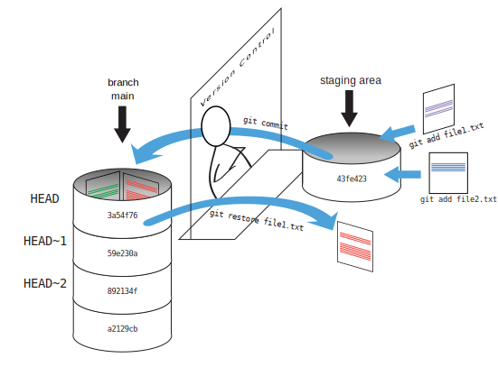

Exploring History
software, data, lesson, The Carpentries
- How can I identify old versions of files?
- How do I review my changes?
- How can I recover old versions of files?
- Explain what the HEAD of a repository is and how to use it.
- Identify and use Git commit numbers.
- Compare various versions of tracked files.
- Restore old versions of files.
As we saw in the previous episode, we can refer to commits by their identifiers. You can refer to the most recent commit of the working directory by using the identifier HEAD.
We’ve been adding small changes at a time to guacamole.md, so it’s easy to track our progress by looking, so let’s do that using our HEADs. Before we start, let’s make a change to guacamole.md, adding yet another line.
nano guacamole.md
cat guacamole.md# Guacamole
## Ingredients
* avocado
* lime
* salt
## Instructions
An ill-considered changeNow, let’s see what we get.
git diff HEAD guacamole.mddiff --git a/guacamole.md b/guacamole.md
index b36abfd..0848c8d 100644
--- a/guacamole.md
+++ b/guacamole.md
@@ -4,3 +4,4 @@
* lime
* salt
## Instructions
+An ill-considered changeNote that HEAD is the default option for git diff, so omitting it will not change the command’s output at all (give it a try). However, the real power of git diff lies in its ability to compare with previous commits. For example, by adding ~1 (where “~” is “tilde”, pronounced [til-duh]), we can look at the commit before HEAD.
git diff HEAD~1 guacamole.mdIf we want to see the differences between older commits we can use git diff again, but with the notation HEAD~1, HEAD~2, and so on, to refer to them:
git diff HEAD~2 guacamole.mddiff --git a/guacamole.md b/guacamole.md
index df0654a..b36abfd 100644
--- a/guacamole.md
+++ b/guacamole.md
@@ -1,3 +1,6 @@
# Guacamole
## Ingredients
+* avocado
+* lime
+* salt
## InstructionsWe could also use git show which shows us what changes we made at an older commit as well as the commit message, rather than the differences between a commit and our working directory that we see by using git diff.
git show HEAD~2 guacamole.mdcommit f22b25e3233b4645dabd0d81e651fe074bd8e73b
Author: Alfredo Linguini <a.linguini@ratatouille.fr>
Date: Thu Aug 22 10:07:21 2013 -0400
Create a template for recipe
diff --git a/guacamole.md b/guacamole.md
new file mode 100644
index 0000000..df0654a
--- /dev/null
+++ b/guacamole.md
@@ -0,0 +1,3 @@
+# Guacamole
+## Ingredients
+## InstructionsIn this way, we can build up a chain of commits. The most recent end of the chain is referred to as HEAD; we can refer to previous commits using the ~ notation, so HEAD~1 means “the previous commit”, while HEAD~123 goes back 123 commits from where we are now.
We can also refer to commits using those long strings of digits and letters that both git log and git show display. These are unique IDs for the changes, and “unique” really does mean unique: every change to any set of files on any computer has a unique 40-character identifier. Our first commit was given the ID f22b25e3233b4645dabd0d81e651fe074bd8e73b, so let’s try this:
git diff f22b25e3233b4645dabd0d81e651fe074bd8e73b guacamole.mddiff --git a/guacamole.md b/guacamole.md
index df0654a..93a3e13 100644
--- a/guacamole.md
+++ b/guacamole.md
@@ -1,3 +1,7 @@
# Guacamole
## Ingredients
+* avocado
+* lime
+* salt
## Instructions
+An ill-considered changeThat’s the right answer, but typing out random 40-character strings is annoying, so Git lets us use just the first few characters (typically seven for normal size projects):
git diff f22b25e guacamole.mddiff --git a/guacamole.md b/guacamole.md
index df0654a..93a3e13 100644
--- a/guacamole.md
+++ b/guacamole.md
@@ -1,3 +1,7 @@
# Guacamole
## Ingredients
+* avocado
+* lime
+* salt
## Instructions
+An ill-considered changeAll right! So we can save changes to files and see what we’ve changed. Now, how can we restore older versions of things? Let’s suppose we change our mind about the last update to guacamole.md (the “ill-considered change”).
git status now tells us that the file has been changed, but those changes haven’t been staged:
git statusOn branch main
Changes not staged for commit:
(use "git add <file>..." to update what will be committed)
(use "git restore <file>..." to discard changes in working directory)
modified: guacamole.md
no changes added to commit (use "git add" and/or "git commit -a")We can put things back the way they were by using git restore:
git restore guacamole.md
cat guacamole.md# Guacamole
## Ingredients
* avocado
* lime
* salt
## InstructionsAs you might guess from its name, git restore restores an old version of a file. By default, it recovers the version of the file recorded in HEAD, which is the last saved commit. If we want to go back even further, we can use a commit identifier instead, using -s option:
git restore -s f22b25e guacamole.mdcat guacamole.md# Guacamole
## Ingredients
## Instructionsgit statusOn branch main
Changes not staged for commit:
(use "git add <file>..." to update what will be committed)
(use "git restore <file>..." to discard changes in working directory)
modified: guacamole.md
no changes added to commit (use "git add" and/or "git commit -a")
Notice that the changes are not currently in the staging area, and have not been committed. If we wished, we can put things back the way they were at the last commit by using git restore to overwrite the working copy with the last committed version:
git restore guacamole.md
cat guacamole.md# Guacamole
## Ingredients
* avocado
* lime
* salt
## InstructionsIt’s important to remember that we must use the commit number that identifies the state of the repository before the change we’re trying to undo. A common mistake is to use the number of the commit in which we made the change we’re trying to discard. In the example below, we want to retrieve the state from before the most recent commit (HEAD~1), which is commit f22b25e. We use the . to mean all files:

So, to put it all together, here’s how Git works in cartoon form:

The fact that files can be reverted one by one tends to change the way people organize their work. If everything is in one large document, it’s hard (but not impossible) to undo changes to the introduction without also undoing changes made later to the conclusion. If the introduction and conclusion are stored in separate files, on the other hand, moving backward and forward in time becomes much easier.
Recovering Older Versions of a File
Jennifer has made changes to the Python script that she has been working on for weeks, and the modifications she made this morning “broke” the script and it no longer runs. She has spent ~ 1hr trying to fix it, with no luck…
Luckily, she has been keeping track of her project’s versions using Git! Which commands below will let her recover the last committed version of her Python script called data_cruncher.py?
git restoregit restore data_cruncher.pygit restore -s HEAD~1 data_cruncher.pygit restore -s <unique ID of last commit> data_cruncher.pyBoth 2 and 4
Solution (Solution). The answer is (5)-Both 2 and 4.
The restore command restores files from the repository, overwriting the files in your working directory. Answers 2 and 4 both restore the latest version in the repository of the file data_cruncher.py. Answer 2 uses HEAD to indicate the latest, whereas answer 4 uses the unique ID of the last commit, which is what HEAD means.
Answer 3 gets the version of data_cruncher.py from the commit before HEAD, which is NOT what we wanted.
Answer 1 results in an error. You need to specify a file to restore. If you want to restore all files you should use git restore .
Reverting a Commit
Jennifer is collaborating with colleagues on her Python script. She realizes her last commit to the project’s repository contained an error, and wants to undo it. Jennifer wants to undo correctly so everyone in the project’s repository gets the correct change. The command git revert [erroneous commit ID] will create a new commit that reverses the erroneous commit.
The command git revert is different from git restore -s [commit ID] . because git restore returns the files not yet committed within the local repository to a previous state, whereas git revert reverses changes committed to the local and project repositories.
Below are the right steps and explanations for Jennifer to use git revert, what is the missing command?
________ # Look at the git history of the project to find the commit IDCopy the ID (the first few characters of the ID, e.g. 0b1d055).
git revert [commit ID]Type in the new commit message.
Save and close.
Solution (Solution). The command git log lists project history with commit IDs.
The command git show HEAD shows changes made at the latest commit, and lists the commit ID; however, Jennifer should double-check it is the correct commit, and no one else has committed changes to the repository.
Understanding Workflow and History
What is the output of the last command in
cd recipes
echo "I like tomatoes, therefore I like ketchup" > ketchup.md
git add ketchup.md
echo "ketchup enhances pasta dishes" >> ketchup.md
git commit -m "My opinions about the red sauce"
git restore ketchup.md
cat ketchup.md # this will print the content of ketchup.md on screenketchup enhances pasta dishesI like tomatoes, therefore I like ketchupI like tomatoes, therefore I like ketchup ketchup enhances pasta dishesError because you have changed ketchup.md without committing the changes
Solution (Solution). The answer is 2.
The changes to the file from the second echo command are only applied to the working copy, not the version in the staging area. The command git add ketchup.md places the current version of ketchup.md into the staging area.
So, when git commit -m "My opinions about the red sauce" is executed, the version of ketchup.md committed to the repository is the one from the staging area and has only one line.
At this time, the working copy still has the second line (and git status will show that the file is modified). However, git restore ketchup.md replaces the working copy with the most recently committed version of ketchup.md. So, cat ketchup.md will output
I like tomatoes, therefore I like ketchupChecking Understanding of git diff
Consider this command: git diff HEAD~9 guacamole.md. What do you predict this command will do if you execute it? What happens when you do execute it? Why?
Try another command, git diff [ID] guacamole.md, where [ID] is replaced with the unique identifier for your most recent commit. What do you think will happen, and what does happen?
Getting Rid of Staged Changes
git restore can be used to restore a previous commit when unstaged changes have been made, but will it also work for changes that have been staged but not committed? Make a change to guacamole.md, add that change using git add, then use git restore to see if you can remove your change.
Solution (Solution). After adding a change, git restore can not be used directly. Let’s look at the output of git status:
On branch main
Changes to be committed:
(use "git restore --staged <file>..." to unstage)
modified: guacamole.md
Note that if you don’t have the same output you may either have forgotten to change the file, or you have added it and committed it.
Using the command git restore guacamole.md now does not give an error, but it does not restore the file either. Git helpfully tells us that we need to use git restore --staged first to unstage the file:
git restore --staged guacamole.mdNow, git status gives us:
git statusOn branch main
Changes not staged for commit:
(use "git add <file>..." to update what will be committed)
(use "git git restore <file>..." to discard changes in working directory)
modified: guacamole.md
no changes added to commit (use "git add" and/or "git commit -a")This means we can now use git restore to restore the file to the previous commit:
git restore guacamole.md
git statusOn branch main
nothing to commit, working tree cleanExplore and Summarize Histories
Exploring history is an important part of Git, and often it is a challenge to find the right commit ID, especially if the commit is from several months ago.
Imagine the recipes project has more than 50 files. You would like to find a commit that modifies some specific text in guacamole.md. When you type git log, a very long list appeared. How can you narrow down the search?
Recall that the git diff command allows us to explore one specific file, e.g., git diff guacamole.md. We can apply a similar idea here.
git log guacamole.mdUnfortunately some of these commit messages are very ambiguous, e.g., update files. How can you search through these files?
Both git diff and git log are very useful and they summarize a different part of the history for you. Is it possible to combine both? Let’s try the following:
git log --patch guacamole.mdYou should get a long list of output, and you should be able to see both commit messages and the difference between each commit.
Question: What does the following command do?
git log --patch HEAD~9 *.mdgit diffdisplays differences between commits.git restorerecovers old versions of files.